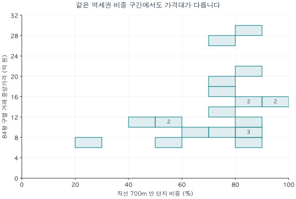

역세권 숫자 읽기 · 8 / 8
역세권이 많은 구는 비쌀까? 구별 상관과 단지 비교의 차이
서울 25개 구의 역 700m 안 아파트 비중과 84형 중앙가격을 비교합니다. 구별 상관과 같은 구·연식의 가격 차이가 답하는 질문을 구분합니다.
분석 기간 · 2025년 7월~2026년 6월 84형 매매 · 현재 수집 아파트 재고 | 자료 기준일 · 2026-10-29
서울에서 역 700m 안 아파트 단지 비중이 높은 구는 84형 거래 중앙가격도 높은 경향이 있었습니다. 서울 25구의 순위를 비교한 상관계수는 약 0.36이었습니다. 단지 대신 확인 세대수를 세면 약 0.48이었습니다. 이 숫자로 관심 단지의 역 접근성에 얼마의 값을 붙일 수 있을까요?
역세권 단지가 많은 구는 비쌌나요?
2025년 7월부터 2026년 6월까지 서울 25개 구의 84형 매매가격 중앙값을 구했습니다. 각 구의 700m 안 단지 비중을 가격과 비교했습니다. 아래 사각형은 비중 10%포인트 폭과 가격 2억 원 폭이 만나는 구간입니다. 겹친 사각형의 숫자는 그 구간에 속한 구의 수입니다.

그림에서 비중이 비슷한 구들 사이에도 가격대가 벌어집니다. 한 구씩 제외하고 다시 순위를 비교하면 단지 비중과 가격의 상관은 약 0.27~0.44, 세대 비중과 가격의 상관은 약 0.41~0.54 범위였습니다.
| 비중의 분모 | 상관계수 | 한 구씩 제외 |
|---|---|---|
| 아파트 단지 | 약 0.36 | 약 0.27~0.44 |
| 확인 세대 | 약 0.48 | 약 0.41~0.54 |
상관계수는 순서가 함께 움직이는 정도를 요약합니다. 0.48을 가격이 48% 비싸다거나 가격 차이의 48%를 설명한다고 읽을 수는 없습니다. 세대 비중을 쓴 순위 상관은 650m에서 약 0.51, 750m에서 약 0.43이었습니다.
같은 구 안의 가격 차이는 어떻게 달랐나요?
같은 구·연식의 84형 비교에서는 역 700m 안과 밖 모두 거래가 충분한 조건을 골랐습니다. 서울에서는 여섯 구가 남았고, 같은 구·연식별 가격비를 지역별로 요약한 값은 700m 안쪽이 10% 이상 15% 미만 높은 구간이었습니다.
구별 상관의 분모는 25개 구이고, 구 안 비교의 분모는 조건을 충족한 여섯 구 안의 거래입니다. 상관계수와 가격비는 같은 양을 측정하지 않습니다. 25개 구의 대표 가격에서 보인 관계를 한 단지의 가격 효과로 옮기면 서로 다른 수준의 비교를 섞게 됩니다.
구 지표를 읽을 때 무엇을 확인하나요?
먼저 분모가 단지인지 세대인지 확인합니다. 이어 구별 가격이 어느 면적과 기간의 거래에서 계산됐는지 봅니다. 후보 단지를 비교할 차례에는 관심 지역 안의 같은 면적·연식 매매로 범위를 좁히고 역 출입구까지 실제 경로를 확인하세요.
집계 기준과 자료
국토교통부 아파트 매매의 확인 거래에서 해제·직거래·토지임대부를 제외했습니다. 84형은 전용 25·26평형입니다. 역 위치는 국가철도공단 표준 역사정보에 바탕을 둔 현재 자료입니다. 비중은 단지의 위치와 확인 세대수, 가격은 해당 기간의 거래를 사용했습니다. 구별 재고와 거래의 모집단이 같지 않습니다.
Spearman 상관은 각 지표의 순위를 비교합니다. 구에 같은 비중을 줬고, 한 구씩 뺀 25개 결과의 최저와 최고를 함께 확인했습니다. 그림의 사각형은 공개 표시 범위이며 개별 구의 정확한 좌표나 신뢰구간을 뜻하지 않습니다.
분석·집필: 파파펭귄 (Nobot Kang). 에이전트로 집계·수치 대조와 초안 검토를 보조했습니다.